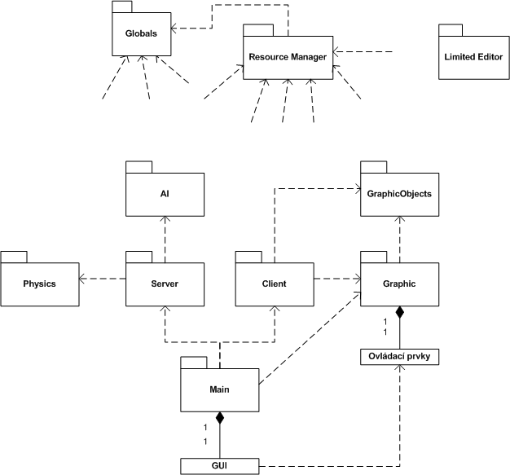
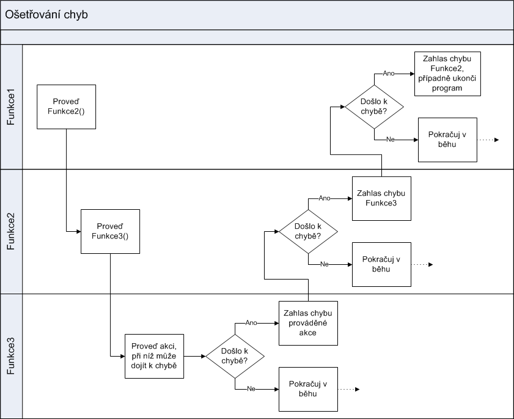

Za cílovou platformu jsme pøedem zvolili systém Windows. Jednak proto, �e nám byl všem dùvìrnì známı, jednak proto, �e jsme nemìli �ádné zkušenosti s grafickımi knihovnami OpenGL (narozdíl od DirectX), a koneènì proto, �e vìtšina her urèená pro PC je smìøována na tento operaèní systém. Z dùvodu nìkterıch systémovıch funkcí jsme se navíc omezili na Windows XP, nebo� Windows 98 a ME nemají podporu pøesnıch èasovaèù, kterıch je ve hrách tøeba, a Windows 2000 a 2003 jsme pøi vıvoji nemìli k dispozici pro stálé testování (navíc svım zamìøením nejsou vhodnou cílovou platformou).
Z velmi obdobnıch dùvodù bylo pøi volbì programovacího jazyka vybráno C++. Pro své vlastnosti je to v dnešní dobì nejvíce pou�ívanı jazyk pøi vıvoji her, zvolili jsme ho tedy i my.
Pøi vıbìru integrovaného vıvojového prostøedí (a pota�mo i kompilátoru) jsme pova�ovali Microsoft Visual Studio za jakısi standard, se kterım jsme navíc ji� byli více èi ménì seznámeni. V prùbìhu vıvoje to pak byly postupnì verze 7.0, 7.1 a 8.0, respektive 2002, .NET 2003 a 2005. Narozdíl od jinıch vıvojovıch prostøedí urèenıch pro jazyk C++, MSVS zahrnuje debugger pro shadery, co� je nedocenitelná pomùcka pøi vıvoji grafickıch aplikací.
Pro volbu grafickıch knihoven Direct3D pøispìl nejen to, �e jsme s nimi mìli ji� nìjaké zkušenosti, ale pøedevším fakt, �e balík DirectX (jeho� je Direct3D nedílnou souèástí) nezahrnuje pouze grafické knihovny, ale také zpracování u�ivatelského vstupu (modul DirectInput) a øadu dalších knihoven pro práci s hudbou, zvukem èi sítí (by� jsme tyto další moduly v projektu nepou�ili).
Po delším rozhodování jsme se také uchılili k pou�ití knihovny tøetí strany jako základ implementace fyzikálního enginu. Více o pou�ité knihovnì Newton Game Dynamics v sekci Fyzikální engine.
Pøehrávání hudby ze souborù formátu mp3 provádí funkce z knihovny FMOD.
Diagram na obr. 1.1 ukazuje závislosti mezi jednotlivımi moduly celého projektu. Do diagramu nejsou zahrnuty samostatné utility, které slou�ily jen pøi vıvoji a nejsou souèástí hry. Stejnì tak není v diagramu pro pøehlednost explicitnì zaznamenána závislost všech ostatních modulù na modulech Resource Manager a Globals.

Obrázek 1.1: Diagram závislostí jednotlivıch modulù projektu. Pro pøehlednost nejsou zobrazeny závislosti všech modulù kromì Globals na Resource Manageru a všech modulù kromì Limited Editoru na modulu Globals.
Modul Globals má v projektu zcela zvláštní postavení. Zastøešuje všechna makra, konstanty, funkce a tøídy, které jsou široce pou�ívány ve všech ostatních modulech. Vytvoøení takto klíèového modulu má ten dùsledek, �e samostatnì jsou ostatní moduly nepou�itelné (nelze je pøenést a pou�ít v jiném projektu bez pøenesení Globals). Avšak jak u� jsme se zmínili v úvodu - neplánovali jsme vytváøet knihovny obecnì pou�itelnıch funkcí, ale jeden funkèní celek, a v takovém bylo vydìlení obecnì pou�ívanı entit ku prospìchu. Nejdùle�itìjší funkcionalita tohoto modulu je popsána dále v kapitolách Konfiguraèní soubory a Ošetøování chyb a vıjimek.
Modulem, kterı se stará o správu zdrojù, je Resource Manager. Jednak je vrstvou oddìlující ostatní moduly od systému souborù, jednak se stará o to, aby �ádnı soubor nebyl zbyteènì nahráván (èi dokonce uchováván v pamìti) vícekrát. Svım rozhraním poskytuje transparenci pøístupu k souborùm, tak�e volající funkce nejen neví, z jakého místa byl po�adovanı soubor naèten, ale ani zda byl vùbec právì naèten. Podstatné je pouze navrácené tzv. "resource ID" a struktura, která se dá za pomoci tohoto resrouce ID získat. Podrobnìji se Resource Manageru vìnujeme v sekci Resource Manager.
Modul Main je hlavním modulem projektu. Hlavním v tom smyslu, �e jeho produktem je spustitelnı soubor, kterı startuje hru Unlimited Racer. Pomineme-li další samosatné aplikace, je tento modul pøímo èi nepøímo závislı na všech ostatních. Pøedstavuje øídící jednotku celé aplikace - "startuje" server i klienta, iniciuje grafickı mód atd. Více je mo�né nalézt v sekci Hra.
Tento modul pøedstavuje serverovskou èást hry, tj. procesy, které jsou provádìny na serveru (a to i v pøípadì, �e hráè zvolí hru typu "single player"). Je úzce svázán s moduly Physics a AI, jejich� slu�eb vyu�ívá. Jeho souèástí je sí�ové rozhraní, pøes které server komunikuje s klienty (pøijímá spojení, akceptuje hráèe, rozesílá údaje, ...). Bìhem samotné hry se stará o správnì probíhající vıpoèet fyzikálního modulu. Detailnìji je rozebrán v kapitole Server.
Modul Client jednak pøedstavuje klientskou èást sí�ové aplikace, tj. iniciuje spojení, �ádá o slu�bu serveru (o vstup do hry) atd., jednak vystupuje jako prostøedník mezi serverem a hráèem - zpracovává u�ivatelskı vstup, pøedává ho serveru, naèítá a pøipravuje všechna data potøebná na stranì klienta a vyu�íváním slu�eb modulù Graphic a Graphic Objects zajiš�uje zobrazení herní scény. Detailnìji je rozebrán v kapitole Klient.
Serverem vyu�ívanı modul Physics má za úkol na základì vstupních dat, jimi� jsou pøedzpracované u�ivatelské vstupy pøelo�ené do øeèi pøíkazù k ovládání auta (br�dìní, plyn, toèení volantem, ...) a èasovı interval, urèit, jakım zpùsobem se scéna, nad kterou je vıpoèet provádìn, zmìní. To znamená, �e objektùm udìlí rychlost, smìr pohybu, rotaci atd. Rozebrán je v samostatné sekci Physics.
Vıraznì nejrozsáhlejším modulem je Graphic, kterı zahrnuje øídící jádro 3D grafického engine, všechny jeho stì�ejní funkce a jeho souèástí je té� systém ovládacích prvkù pøedstavujících neherní GUI. Modul je silnì závislı na modulu Graphic Objects, je� by se dal pova�ovat za jeho datovou èást. Velmi detailnì jsou oba moduly rozebrány v sekci Grafickı engine, odkud je také více pochopitelnı jejich tìsnı vztah.
Modul Graphic Objects reprezentuje zobrazovanou scénu, je tedy vyu�íván pøednì modulem Client pro naètení a správu celé herní scény, a pak modulem Graphic jako jednotka zobrazující �ádaná data zvolenım zpùsobem. Dopodrobna je rozebrán v kapitole Grafické objekty sekce Grafickı engine, jeho� je nedìlitelnou souèástí.
Limited Editor je samostatnou okenní aplikací slou�ící k vytváøení a editování tratí (a nejen tratí), které je mo�né následnì uplatnit ve høe. Je závislı pouze na Resource Manageru, kterı nevyu�ívá ani tak pro inteligentní správu zdrojù, jako spíše pro naèítání všech relevantních typù souborù. Rozebrán je v sekci Limited Editor.
Ve høe je mo�né soutì�it s fiktivními oponenty, co� jsou poèítaèem øízená auta. Modul AI (tj. Artificial Intelligence) pøedstavuje rozhodovací logiku tìchto oponentù. Na základì znalosti vlastností auta a okolní scény se rozhoduje jakım zpùsobem auto dále øídit. Tento proces je øízen serverem, stejnì jako fyzikální vıpoèet. Více je mo�né nalézt v sekci AI.
Projekt zahrnuje ještì øadu dalších modulù (celkem 19), které byly v prùbìhu vıvoje vyu�ívány pøedevším ke generování èi editaci nìkterıch dat a k snadnému testování jinıch modulù. Nìkteré však ji� ztratily vıznam docela kvùli zmìnì formátu souborù, èi pøímo zmìnì návrhu a chování jinıch èástí projektu. Dùle�ité a stále aktivní projekty jsou tyto:
Pro lepší orientaci v (nejen) zdrojovıch souborech projektu zde lehce okomentujeme adresáøovou strukturu. Všechny uvedené cesty jsou relativní ke koøenovému adresáøi projektu.
| Relativní cesta | Popis adresáøe |
| . | Koøenovı adresáø obsahuje pouze projektové soubory pro MSVS 2005. |
| AI\ | Zdrojové soubory modulu AI. |
| BBModeler\ | Zdrojové soubory ji� nepou�ívaného modulu na editaci obálek BB Modeler. |
| BBParser\ | Zdrojové soubory ji� nepou�ívaného modulu na generování obálek BB Parser. |
| Client\ | Zdrojové soubory modulu Client. |
| compilation\ | Vıstupní soubory modulù, jejich� vısledkem je spustitelná aplikace nebo dynamicky linkované knihovna. Té� koøenovı adresáø vıstupní adresáøové struktury tvoøené instalátorem. |
| compilation\Data\ | Adresáø se všemi datovımi soubory pro hru. Detailnìjší rozebrání tohoto adresáøe je mo�né nalézt v dokumentaci souborového systému. |
| compilation\Data\Shaders\ | Adresáø souborù obsahujících vertex a pixel shadery. |
| compilation\linking\ | Koøenovı adresáø pro vıstupní soubory modulù, jejich� vısledkem je statická knihovna (té� tedy zvláštní cesta pro linker). Adresáø je dále dìlen do podadresáøù podle oznaèení kompilace (debug/release/...). |
| compilation\removable\ | Odkládací adresáø pro doèasné soubory kompilátoru (prekompilované headery atd.). Adresáø je dále dìlen do podadresáøù podle oznaèení kompilace (debug/release/...). |
| compilation\Support\ | Obsahuje dokumentaci projektu, manuál a další pøilo�ené dokumenty. |
| DXSetup\ | Obsahuje instalátor potøebné verze DirectX. Tento balík je pøidáván do instalátoru jako volitelnı krok po instalaci hry. |
| DXUtils\ | Zdrojové soubory starší verze rozšiøujících funkcí Direct3D pro zobrazování textu na obrazovku. |
| FMOD\inc\ | Hlavièkové soubory knihovny FMOD Ex pou�ívané pro pøehrávání hudby ve høe. |
| FMOD\lib\ | Staticky llinkované knihovny modulu FMOD Ex pou�ívaného pro pøehrávání hudby ve høe. |
| Globals\ | Zdrojové soubory modulu Globals. |
| Graphic\ | Zdrojové soubory modulu Graphic. |
| GraphicObjects\ | Zdrojové soubory modulu Graphic Objects. |
| GraphicTest\ | Zdrojové soubory modulu Graphic Test. |
| LODGenerator\ | Zdrojové soubory ji� nepou�ívaného modulu LOD Generator. |
| Main\ | Zdrojové soubory modulu Main. |
| MapEditor\ | Zdrojové soubory modulu Limited Editor. |
| ModelMaker\ | Zdrojové soubory ji� nepou�ívaného modulu Model Maker urèeného k vytváøení balíkù datovıch souborù. |
| NewtonSDK\ | Koøenovı adresáø SDK pou�itého modulu Newton Game Dynamics. |
| Physics\ | Zdrojové soubory modulu Physics. |
| ResourceManager\ | Zdrojové soubory modulu Resource Manager. |
| RMTest\ | Zdrojové soubory ji� nepou�ívaného modulu RM Test urèeného pro testování Resource Manageru. |
| ScriptInterpreter\ | Zdrojové soubory modulu Script Interpreter. |
| Server\ | Zdrojové soubory modulu Server. |
| SetupWizard\ | Projektové soubory obsahující konfiguraci instalaèního modulu Setup Wizard. |
| SetupWizard\Release\ | Vıstupní soubory instalaèního modulu Setup Wizard - instalaèní balík hry. |
| TerrainGenerator\ | Zdrojové soubory modulu Terrain Generator. |
V projektu jsme se namísto standardních vıjimek rozhodli navrhnout jinı systém zachytávání a ošetøování vzniklıch chyb, kterı by více splòoval naše po�adavky:
Jednotlivé body jsou uvedeny víceménì v poøadí dùle�itosti. V první øadì jsme hledali zpùsob, jak navrhnout systém hlášení chyb tak, aby mohly bıt chyby u�ivateli prezentovány libovolnım zpùsobem podle typu aplikace (ve høe bude tøeba chyby ohlašovat jinak ne� v okenní aplikaci jakou je napøíklad editor tratí). Tím bylo dáno, �e o prezentaci chyby se nesmí starat chybovı mechanismus sám, ale musí se o ni postarat bì�ící aplikace, které bude oznámeno, jaká chyba nastala. Pøitom však jsme chtìli, aby bylo mo�né chybu vyvolat kdekoli, tedy i v modulu mimo aplikaci. To nás dovedlo k implementaci pomocí callback funkce, tj. funkce, kterou hlavní modul aplikace zaregistruje ve tøídì systému hlášení chyb, a ta zaregistrovanou funkci následnì volá pøi ka�dé vzniklé chybì. Parametrem jí pøitom pøedává text chyby a místo, ve kterém k chybì došlo.
To, �e ka�dá vzniklá chyba udává místo, kde k ní došlo, je zásadní pøedevším pro ladící úèely. Chybu toti� neošetøuje (nehlásí) pouze jedna funkce, jako tomu bì�nì bıvá v pøípadì vıjimek. Vìtšinu funkcí a metod tøíd jsme napsali tak, �e vrací chybovou hodnotu v podobì promìnné typu HRESULT, co� je celoèíselná hodnota chápána tak, �e 0 znamená úspìšné provedení funkce a záporná hodnota reprezentuje definovanı kód chyby (kladné hodnoty jsou zpravidla nevyu�ity). Ka�dé volání takové funkce je tedy otestováno a v pøípadì, �e došlo k chybì, je vygenerována chybová hláška. Bìh volající funkce je zpravidla v daném místì ukonèen s návratovou hodnotou oznamující chybu. Tato chyba však ji� mù�e bıt jiného charakteru, nebo� volající funkce chápe nastalou situaci jinak. Pøíkladem je chyba vzniklá v Resource Manageru, kterému se nepodaøilo otevøít po�adovanı soubor. Resource Manager vygeneruje chybovou hlášku pro chybu ERRFILENOTFOUND a oznámí chybu volající funkci. Ta nezjiš�uje k jaké chybì došlo uvnitø Resource Manageru, z jejího pohledu pouze došlo k tomu, �e po�adovanı zdroj nebyl k dispozici, co� mohlo vést øeknìme k neúspìšné inicializaci jednoho z aut hráèù. V takovém pøípadì funkce oznámí chybu ERRRESOURCENOTAVAILABLE a pøedá øízení funkci nadøazené. Schéma na obr. 2 zachycuje popsanı princip.

Obrázek 2: Schéma zachytávání chyb.
Uvedené øešení nám znaènì zjednodušilo dohledávání chyb v kódu, nebo� všechny chybové vıstupy jsme nasmìøovali do souboru, kterı pøi vzniku nìjaké chyby obsahoval záznamy o tom, kde byla chyba vyvolána, co bylo její podstatou, ale pøedevším jakou hierarchií volání jsme se k ní dostali. Tak jsme mohli èasto i bez pou�ití debuggeru rozpoznat kde v programu se nachází chyba. Pøíklad chybového vıstupu mù�e bıt následující:
CResourceManager::LoadPhysicalTexture() : Can not find file 'GRASS.PHPLATE'. CResourceManager::LoadResource() : Could not load PhysicalTexture. CResourceManager::LoadTerrain() : Could not load PhysicalTexture 'grass.phPlate'. CResourceManager::LoadResource() : Could not load Terrain. CGrObjectTerrain::Init() : Could not load terrain object. MapInit() : Terrain wasn't loaded
Na prvním øádku v uvedeném chybovém vıstupu se dozvídáme, �e nebyl nalezen potøebnı soubor, v dalších øádcích pak kde v programu byl tento soubor po�adován.
Vylepšením tohoto systému je rozdìlení hlášek na ryze chybové (zpravidla ukonèí program) a hlášky ladícího charakteru (upozoròují na to, kudy program prošel, pøípadnì jaké podezøelé hodnoty se nachází v nìkterıch dùle�itıch promìnnıch). Pro ka�dı typ hlášek je samostatnı objekt se svou vlastní funkcí pro smìrování vıstupu, tak�e zatímco chybové hlášky mohou bıt smìøovány do souboru, ladící hlášky mù�eme zobrazovat na obrazovku atp. Pro ladící hlášky je navíc definováno 5 úrovní dùle�itosti a nastavením makra èi promìnné DebugLevel je mo�né ovlivòovat jak podrobné (a tedy i objemné) mají bıt ladící informace.
Pod pojmem jednoduché pou�ití jsme si pøedstavovali vyhnutí se psaní nadbyteèného kódu jen pro ošetøování chyb. Tomu jsme tolik nedostáli, a proto jsme nadefinovali celou øadu maker, která tuto nevıhodu potlaèovala. Následující pøíklad ukazuje ošetøení vytvoøení dynamické promìnné jako pole a její následné uvolnìní.
// definice u�itıch maker
#define ERRORMSG(code, location, param, ret) \
{ \
ErrorHandler.HandleError( code, _T( location ), _T( param ) ); \
return ret; \
}
#define ERRORMSG(code, location, param) __ERRORMSG(code, location, param, code)
#define SAFE_NEW(p,_class,fce) { p=new (_class); if(!p)ERRORMSG(ERROUTOFMEMORY,fce,""); }
#define SAFE_NEW_ARRAY(p,_class,size,fce) SAFE_NEW(p,_class[size],fce)
#define SAFE_DELETE_ARRAY(p) { if (p) { delete[] (p); (p) = NULL; } }
// definice funkce, která naalokuje a dealokuje pole
// v pøípadì chyby vyvolá chybovou hlášku a vrátí nenulu
HRESULT CClass::Foo( int count ) {
CClassItem * pArray;
SAFE_NEW_ARRAY(pArray,CClassExample,count,"CClass::Foo()")
/* ... pou�ití pole pObject ... */
SAFE_DELETE_ARRAY(pObject)
return ERRNOERROR;
}
Ji� bylo zmínìno, �e jednou z našich hlavních snah je nabídnout u�ivateli (hráèi) co nejvìtší vlastní prostor, co nejširší pole pùsobnosti na úrovni konfigurace a tvorby map, terénù a objektù ve høe. K uskuteènìní našich pøedstav je nutné mít buïto velmi silné editaèní nástroje, nebo dobøe pøístupná data mìnitelná u�ivatelem. Dostateènì obecnı editor pro všechny mo�né typy datovıch souborù pou�ívanıch ve høe by byl jednak pøíliš rozsáhlı projekt, ne� abychom byli schopni jej zahrnout do našeho èasového harmonogramu, jednak by neustále nará�el na zmìny, které jsme provádìli v prùbìhu dosavadního vıvoje èi které pøinese další vıvoj a rozšiøování schopností herního enginu. Proto jsme se rozhodli pro druhou variantu, tj. systém konfiguraèních souborù volnì pøístupnıch u�ivateli.
Navrhli jsme syntaxi obecného konfiguraèního souboru, kterı má slou�it k nastavení pojmenovanıch polo�ek. Pøi návrhu jsme vyšli ze standardních .ini souborù, ve kterıch jedna øádka odpovídá jednomu pøiøazení (nastavení promìnné) a ve kterıch je mo�né definovat návìští oznaèující blok pøiøazení urèitého charakteru. V prùbìhu vıvoje se však ukázalo, �e by bylo u�iteèné moci definovat hierarchickou strukturu. Rozhodli jsme se tedy o pøidání druhé mo�né syntaxe, ve které jsou namísto návìští párové závorky (tagy) uzavírající skupinu pøiøazení z obou stran (tedy platnost tagu nekonèí definicí následujícího tagu jako v pøípadì návìští). Obì syntaxe je mo�né míchat v rámci jednoho souboru, ale nikde se toho nevyu�ívá.
Shrneme-li obecnou syntaxi tìchto souborù do krátkého pøehledu, pak v ka�dém souboru je mo�né pou�ít:
[PojmenovaneNavesti]
<LibovolnyTag> </LibovolnyTag>
<LibovolnyTag>
<VnorenyTag>
</VnorenyTag>
</LibovolnyTag>
JmenoPolozky = Text, ktery chceme polozce priradit.
CelociselnaPolozka = 987654321 JinaPolozka = 0xffa0a0a0
RealnaPolozka = 3.141592
Polozka = 123 ; krátkı komentáø k polo�ce ; na další øádce jej musíme uvodit znovu
K syntaxi je tøeba doplnit, �e z ka�dého øádku je naèteno pouze prvních 512 znakù, ostatní jsou zahozeny. Maximální délka jména polo�ky, tagu èi návìští není definována, ale logicky té� nemù�e pøesáhnout 512 znakù.
Implementaènì je naèítání konfiguraèního souboru øešeno metodou Load() tøídy NAMEVALUEPAIR. Metodì je pøedána callback funkce, která je následnì volána pro ka�dı naètenı relevantní øádek zvoleného konfiguraèního souboru (jsou tedy ignorovány prázdné øádky a øádky obsahující pouze komentáø). Metoda Load() pøedem urèí, jakého typu je naèítanı øádek (zda je to specifikace polo�ky, návìští nebo otevírající èi uzavírající tag) a callback funkci pøedá informaci o typu, jménu a hodnotì daného øádku (hodnota je nastavena pouze pro specifikaci polo�ky, návìští a tagy mají definováno jen jméno). Je na volajícím, resp. pøedané callback funkci, aby zpracoval naètené polo�ky. Pokud dojde pøi naèítání k chybì na stranì zpracovávající callback funkce (kupøíkladu je zadání nìkteré polo�ky odporuje pravidlùm daného konfiguraèního souboru), je o tom spravena i metoda Load(), která ukonèí další zpracování souboru.
Vıhodou tìchto konfiguraèích souborù je snadná specifikace nového typu vstupních dat, jednoduché zvládnutí syntaxe pro u�ivatele a mimo jiné i to, �e umo�òuje zadávat libovolnou polo�ku opakovanì (naopak v pøípadì, �e je potøeba opakované zadávání polo�ek potlaèit, je nutné toto zaøídit vnitøními stavy na úrovni volané callback funkce).